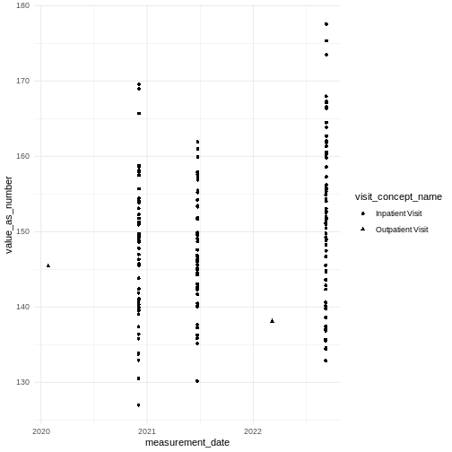

Chapter 5 Visits and how we can use them
Last updated on 2025-09-12 | Edit this page
Overview
Questions
- What are visits and how can they be used ?
Objectives
- Know that a visit is a period of time and patients can have multiple visits
- Understand that multiple measurements, conditions etc. can occur within and between visits
- Understand that for some analyses you will want to look within visits and for other analyses to sum across visits
- Know that visits are recorded in the visit_occurrence table
- Know each visit is unique to a person
- Understand that other tables link to visits
- Understand how visits can be used to find co-occurrence of other events
Introduction
TODO not sure if this wants to be in a separate episode or a more general one about linking tables. It could always be renamed later.
The visit_occurrence table contains events
where Persons engage with the healthcare system for a duration of
time.
The main clinical tables condition_occurrence,
measurement, observation and
drug_exposure contain a visit_occurrence_id
that links to this table.
visit_concept_id specifies the kind of visit that took
place using standardised OMOP concepts. These include
Inpatient visit, Emergency Room Visit and
Outpatient Visit. Inpatient visits can last for longer than
one day.
The visit_detail table can contain information about
time periods shorter than the visit (for example transfer between wards)
but we will not cover that further here.
Generating some example data
Firstly here is some code (from ChatGPT) to create some interesting example data. TODO this code is lengthy, we may later want to hide it or save the output as .Rdata in the repo
R
#person, visit_occurrence, measurement, drug_exposure, condition_occurrence, and concept tables
#realistic blood pressure trends over time
#conditions and drugs co-occurring within visits
#concept table for joining concept names
# Install and load required packages
#install.packages(c("dplyr", "tibble", "lubridate", "uuid"), dependencies = TRUE)
library(dplyr)
library(tibble)
library(lubridate)
library(uuid)
library(tidyr)
set.seed(123)
# 1. Create 100 synthetic patients
n_patients <- 100
person <- tibble(
person_id = 1:n_patients,
gender_concept_id = sample(c(8507, 8532), n_patients, replace = TRUE), # Male / Female
year_of_birth = sample(1940:2000, n_patients, replace = TRUE)
)
# 2. Create multiple visits per patient
visits_per_person <- sample(2:5, n_patients, replace = TRUE)
visit_occurrence <- tibble(
person_id = rep(person$person_id, times = visits_per_person)
) |>
mutate(
visit_occurrence_id = row_number(),
visit_start_date = as_date("2020-01-01") + sample(0:1000, n(), replace = TRUE),
visit_concept_id = sample(c(9201, 9202, 9203), n(), replace = TRUE), # Inpatient, ER, Outpatient
#ER & outpatient just a day
visit_end_date = if_else( visit_concept_id == 9201,
visit_start_date + sample(1:3, n(), replace = TRUE),
visit_start_date),
)
# Baseline + slope per patient in one tibble
bp_params <- tibble(
person_id = 1:n_patients,
bp_slope = rnorm(n_patients, mean = 0, sd = 0.3), # mmHg per hour
systolic_base = rnorm(n_patients, mean = 120, sd = 10)
)
measurement <- visit_occurrence |>
left_join(bp_params, by = "person_id") |>
rowwise() |>
mutate(
n_hours = as.numeric(interval(visit_start_date, visit_end_date) / hours(1)),
hours_seq = list(visit_start_date + hours(0:n_hours))
) |>
ungroup() |>
select(person_id, visit_occurrence_id, bp_slope,
systolic_base, visit_start_date, hours_seq) |>
unnest(hours_seq) |>
mutate(
hours_since_start = as.numeric(difftime(hours_seq, visit_start_date, units = "hours")),
systolic = systolic_base +
(hours_since_start * bp_slope) + # per-hour slope
rnorm(n(), 0, 5), # noise
measurement_id = UUIDgenerate(n = n()),
measurement_concept_id = 3004249, # systolic
unit_concept_id = 8510, # mmHg
measurement_date = hours_seq
) |>
select(measurement_id, person_id, visit_occurrence_id,
measurement_date, measurement_concept_id,
systolic, unit_concept_id) |>
rename(value_as_number = systolic)
# 6. Define condition-drug co-occurrence map
condition_drug_map <- tribble(
~condition_concept_id, ~condition_name, ~drug_concept_id, ~drug_name,
201826, "Type 2 diabetes mellitus", 1124300, "Metformin",
320128, "Essential hypertension", 1112807, "Lisinopril",
319835, "Hyperlipidemia", 19019073, "Atorvastatin"
)
# 7. Generate conditions per visit
condition_occurrence <- visit_occurrence |>
rowwise() |>
do({
#n_conditions <- sample(1:2, 1)
#change n_conditions to 1 so that co-occurrence example works
n_conditions <- 1
selected_conditions <- condition_drug_map |>
slice_sample(n = n_conditions)
tibble(
condition_occurrence_id = UUIDgenerate(n_conditions),
person_id = .$person_id,
visit_occurrence_id = .$visit_occurrence_id,
condition_concept_id = selected_conditions$condition_concept_id,
condition_start_date = .$visit_start_date
)
}) |>
bind_rows()
# 8. Generate drug exposures that match conditions
drug_exposure <- condition_occurrence |>
left_join(condition_drug_map, by = "condition_concept_id") |>
group_by(person_id, visit_occurrence_id, drug_concept_id) |>
summarise(
drug_exposure_id = UUIDgenerate(1),
drug_exposure_start_date = min(condition_start_date),
.groups = "drop"
) |>
mutate(days_supply = sample(30:90, n(), replace = TRUE))
# 9. Build concept table (with all used concepts)
concept <- tribble(
~concept_id, ~concept_name,
3004249, "Systolic Blood Pressure",
3012888, "Diastolic Blood Pressure",
3027114, "Glucose",
3016502, "Creatinine",
1124300, "Metformin",
1112807, "Lisinopril",
19019073, "Atorvastatin",
201826, "Type 2 diabetes mellitus",
320128, "Essential hypertension",
319835, "Hyperlipidemia",
8510, "mm[Hg]",
8713, "mg/dL",
8840, "mmol/L",
9201, "Inpatient Visit",
9202, "Emergency Room Visit",
9203, "Outpatient Visit",
8507, "Male",
8532, "Female"
)
# 10. Combine into synthetic CDM object
cdm <- list(
person = person,
visit_occurrence = visit_occurrence,
measurement = measurement,
condition_occurrence = condition_occurrence,
drug_exposure = drug_exposure,
concept = concept
)
When do we need to consider visits ?
As we have seen we don’t need to consider visits to answer all questions. For example if we can count the number of patients with a particular condition without considering visits.
Using visits can help us with :
- different types of visits
- selecting data from an indivual or selected visits
- finding co-occurrence of events within a visit
We can query the visit_occurrence table to see what
kinds of visits there are in the data.
R
library(dplyr)
cdm$visit_occurrence |>
count(visit_concept_id) |>
left_join(cdm$concept |> select(concept_id, concept_name),
by = c("visit_concept_id" = "concept_id"))
OUTPUT
# A tibble: 3 × 3
visit_concept_id n concept_name
<dbl> <int> <chr>
1 9201 105 Inpatient Visit
2 9202 105 Emergency Room Visit
3 9203 125 Outpatient Visit R
cdm$visit_occurrence
OUTPUT
# A tibble: 335 × 5
person_id visit_occurrence_id visit_start_date visit_concept_id
<int> <int> <date> <dbl>
1 1 1 2020-12-02 9201
2 1 2 2022-03-07 9203
3 1 3 2020-01-26 9203
4 1 4 2021-06-22 9201
5 1 5 2022-09-07 9201
6 2 6 2021-06-02 9203
7 2 7 2022-08-13 9203
8 2 8 2022-01-26 9202
9 2 9 2021-10-27 9202
10 2 10 2021-07-06 9203
# ℹ 325 more rows
# ℹ 1 more variable: visit_end_date <date>Can you use person_id in the
visit_occurrence table to find patients with more than one
visit ?
R
visit_counts <- cdm$visit_occurrence |>
group_by(person_id) |>
summarise(n_visits = n()) |>
filter(n_visits > 1) |>
collect()
visit_counts |> head(4)
OUTPUT
# A tibble: 4 × 2
person_id n_visits
<int> <int>
1 1 5
2 2 5
3 3 3
4 4 4Now we can choose one of the patients from the previous table and look at all of their visits.
R
example_person_id <- visit_counts$person_id[1]
patient_visits <- cdm$visit_occurrence |>
filter(person_id == example_person_id) |>
left_join(cdm$concept, by = c("visit_concept_id" = "concept_id")) |>
select(
visit_occurrence_id, visit_start_date, visit_end_date, concept_name
) |>
arrange(visit_start_date) |>
collect()
patient_visits
OUTPUT
# A tibble: 5 × 4
visit_occurrence_id visit_start_date visit_end_date concept_name
<int> <date> <date> <chr>
1 3 2020-01-26 2020-01-26 Outpatient Visit
2 1 2020-12-02 2020-12-04 Inpatient Visit
3 4 2021-06-22 2021-06-24 Inpatient Visit
4 2 2022-03-07 2022-03-07 Outpatient Visit
5 5 2022-09-07 2022-09-10 Inpatient Visit Outpatient and Emergency Room Visits usually end on the same day, where Inpatient visits can last longer.
Here is how we can plot a measurement (in this case blood pressure)
over time for a patient. You may remember from a previous lesson that
numeric measurements are stored in the column
value_as_number.
First we filter the data.
R
# Define concept IDs
systolic_id <- 3004249
selected_patient <- 1
bp <- cdm$measurement |>
filter(person_id == selected_patient) |>
filter(measurement_concept_id %in% c(systolic_id))
head(bp,3)
OUTPUT
# A tibble: 3 × 7
measurement_id person_id visit_occurrence_id measurement_date
<chr> <int> <int> <dttm>
1 0a7d56fd-fb23-4cb6-971c-a08… 1 1 2020-12-02 00:00:00
2 d8997539-99a7-4e13-ac88-f86… 1 1 2020-12-02 01:00:00
3 2c2f8624-7ed1-4893-9533-b05… 1 1 2020-12-02 02:00:00
# ℹ 3 more variables: measurement_concept_id <dbl>, value_as_number <dbl>,
# unit_concept_id <dbl>Then we can plot using ggplot2.
R
library(ggplot2)
ggplot(bp, aes(x = measurement_date,
y = value_as_number)) +
geom_point() +
theme_minimal()

You should be able to see some dates with single measurements and some with a few measurements very close to each other. Each separate group is a single visit.
Challenge
Can you modify the query and plot to show the type of visit ?
You can join to visit_occurrence to get visit_concept_id, and from
that join to the concept table to get concept_name. You can add
shape = to the aes() statement in the plot.
R
# Define concept IDs
systolic_id <- 3004249
selected_patient <- 1
bp2 <- cdm$measurement |>
filter(person_id == selected_patient) |>
filter(measurement_concept_id %in% c(systolic_id)) |>
left_join(cdm$visit_occurrence, by = c("visit_occurrence_id", "person_id")) |>
left_join(cdm$concept, by = join_by(visit_concept_id == concept_id)) |>
rename(visit_concept_name = concept_name)
ggplot(bp2, aes(x = measurement_date, y = value_as_number, shape = visit_concept_name)) +
geom_point() +
theme_minimal()

To indicate the type of visit we need to join to visit_occurrence to get the visit_concept_id and then join to the concept table to get a name for that concept.
Note that we join the visit_occurrence table to the measurement table
using both ("visit_occurrence_id", "person_id"). If we
didn’t include both, one of the columns would get duplicated and renamed
making it difficult to select later. Se with person_id
below.
R
cdm$measurement |>
left_join(cdm$visit_occurrence, by = c("visit_occurrence_id")) |>
names()
OUTPUT
[1] "measurement_id" "person_id.x" "visit_occurrence_id"
[4] "measurement_date" "measurement_concept_id" "value_as_number"
[7] "unit_concept_id" "person_id.y" "visit_start_date"
[10] "visit_concept_id" "visit_end_date" Challenge
Can you plot the measurements for one of the Inpatient visits ?
You can filter bp created in the previous challenge by one of the visit_occurrence_id from the table earlier.
R
bp3 <- bp2 |> filter( visit_occurrence_id == 1 )
ggplot(bp3, aes(x = measurement_date, y = value_as_number, shape = visit_concept_name)) +
geom_point() +
theme_minimal()

You should be able to see hourly blood pressure measurements within a visit.
Here is an example where the visit can make a difference to an analysis. Imagine we want to look at which drugs are associated with which conditions for patients.
If we were to join tables by person_id as we have seen
in previous exercises we could get conditions and drugs that were
separated by many years. Instead we can include
visit_occurrence_id in the join to get co-occurrence of
conditions and drugs in the same visit.
R
co_occurrence_by_visit <- cdm$condition_occurrence |>
# Join with drug_exposure on person and visit
inner_join(cdm$drug_exposure, by = c("person_id", "visit_occurrence_id")) |>
# Count how often each condition–drug pair co-occurs in a visit
group_by(condition_concept_id, drug_concept_id) |>
summarise(co_occurrences = n(), .groups = "drop") |>
# Join to get condition name
left_join(
cdm$concept |> select(concept_id, concept_name),
by = c("condition_concept_id" = "concept_id")
) |>
rename(condition_name = concept_name) |>
# Join to get drug name
left_join(
cdm$concept |> select(concept_id, concept_name),
by = c("drug_concept_id" = "concept_id")
) |>
rename(drug_name = concept_name) |>
select(condition_name, drug_name, co_occurrences)
co_occurrence_by_visit
OUTPUT
# A tibble: 3 × 3
condition_name drug_name co_occurrences
<chr> <chr> <int>
1 Type 2 diabetes mellitus Metformin 127
2 Hyperlipidemia Atorvastatin 95
3 Essential hypertension Lisinopril 113Here we see a perfect co-occurrence between conditions & expected drugs for treating that condition (because we generated the example data that way). If instead you didn’t use the visit_occurrence_id you would see more unexpected associations occurring across widely separated visits for the same patient.
Challenge
Can you repeat the query without using
visit_occurrence_id to see what results you get ?
R
co_occurrence <- cdm$condition_occurrence |>
# Join with drug_exposure on person
inner_join(cdm$drug_exposure, by = c("person_id")) |>
# Count how often each condition–drug pair co-occurs
group_by(condition_concept_id, drug_concept_id) |>
summarise(co_occurrences = n(), .groups = "drop") |>
# Join to get condition name
left_join(
cdm$concept |> select(concept_id, concept_name),
by = c("condition_concept_id" = "concept_id")
) |>
rename(condition_name = concept_name) |>
# Join to get drug name
left_join(
cdm$concept |> select(concept_id, concept_name),
by = c("drug_concept_id" = "concept_id")
) |>
rename(drug_name = concept_name) |>
select(condition_name, drug_name, co_occurrences)
co_occurrence
OUTPUT
# A tibble: 9 × 3
condition_name drug_name co_occurrences
<chr> <chr> <int>
1 Type 2 diabetes mellitus Lisinopril 116
2 Type 2 diabetes mellitus Metformin 257
3 Type 2 diabetes mellitus Atorvastatin 103
4 Hyperlipidemia Lisinopril 89
5 Hyperlipidemia Metformin 103
6 Hyperlipidemia Atorvastatin 179
7 Essential hypertension Lisinopril 205
8 Essential hypertension Metformin 116
9 Essential hypertension Atorvastatin 89Now we see that conditions co-occur with drugs unlikely to be used in their treatment because they came from visits further apart in time.